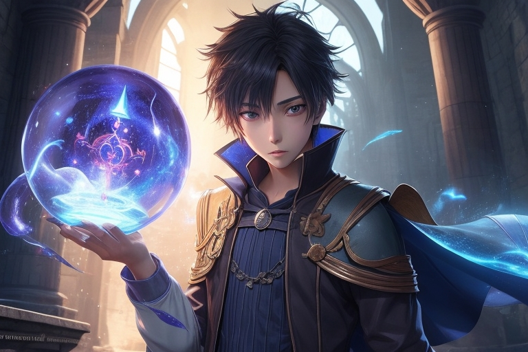
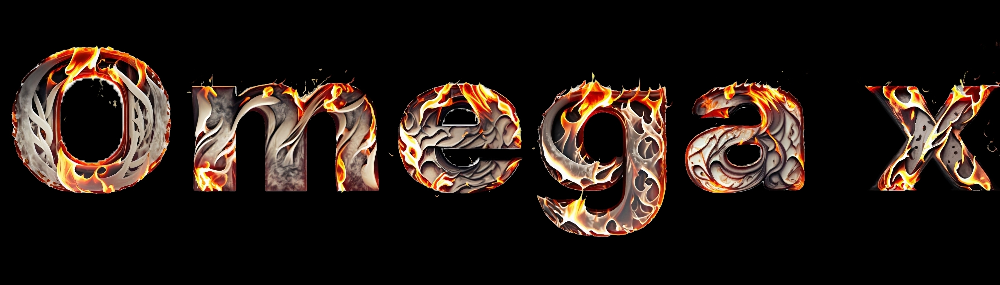
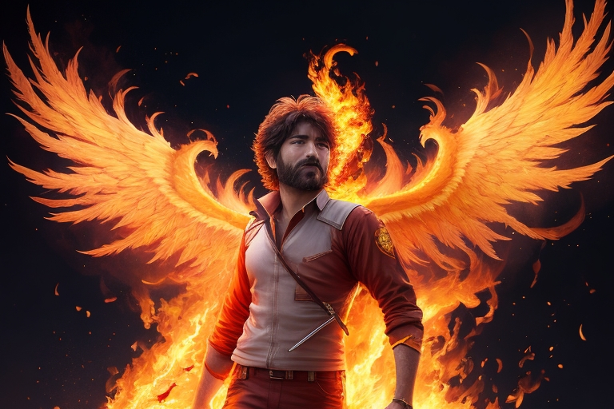
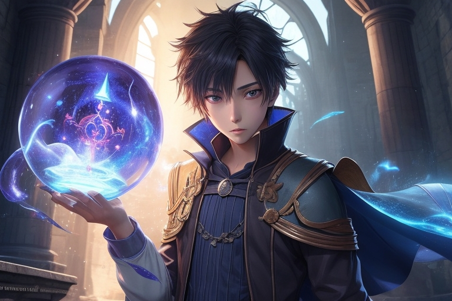
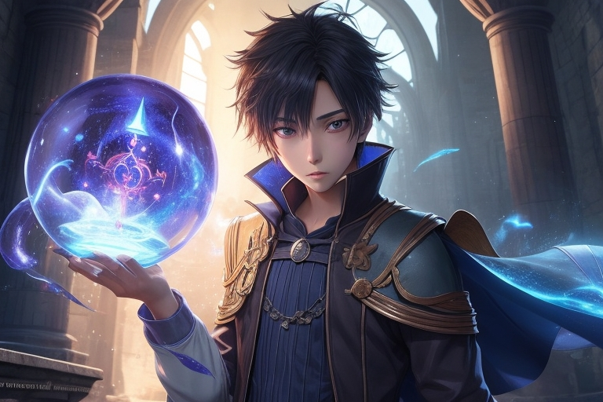

olá, bem-vindo à minha página de animes e mangas!
Eu me chamo barros, e sou um escritor que cria animes e mangas há muitos tempo.
Esta página é um lugar onde eu posso compartilhar meu trabalho com o mundo. Aqui você encontrará meus animes e mangas mais recentes,
bem como informações sobre meu processo de criação.
Espero que você goste do meu trabalho!
Obrigado :)


Omega x capitulo 01
Omega x capitulo 02
ômega x capitulo 03 - O Reencontro com os irmãos
Os cavaleiros do zodiaco - O mundo sombrio - Cap 01

Jack perdeu sua namorada num acidente de carro agora ele constroi uma máquina do
tempo para salvar sua namorada desse acidente mas mal ele sabe que comenteu o pior erro da sua
vida por mexer na linha do tempo

 
